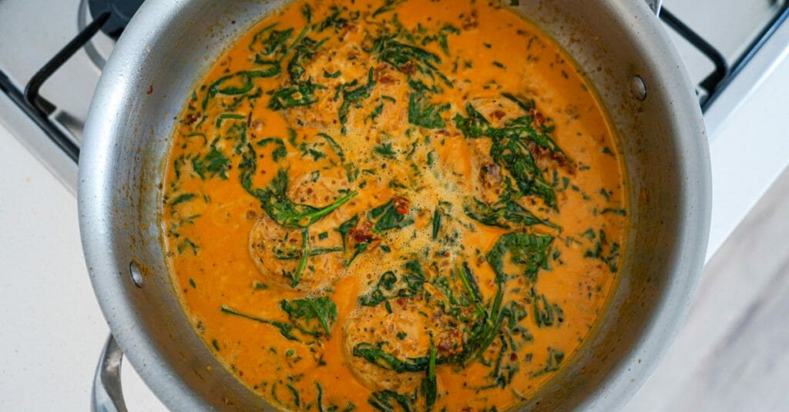

Creamy Garlic Chicken

The Most Delicious Creamy Garlic Tuscan Chicken That Will Leave You Wanting More!
Learn how to make this easy and tasty creamy garlic Tuscan chicken recipe. The recipe and instructions are easy to follow and will result in a full-flavoured Tuscan chicken that’s ready from start to finish in no more than 25 minutes.
Nothing beats making a fantastic dish in one pot and saving time on cleanup, which is the worst part of cooking. This Tuscan chicken recipe is outstanding and will impress anyone you serve it to, even yourself.
Ingredients
- Chicken & Seasoning
- 4 - Small Chicken Breasts, Butterflied
- 1 Tbsp (20ml) - Olive Oil
- 1 tsp (3g) - Onion Powder
- 1 tsp (3g) - Garlic Powder
- ½ tsp (1.5g) - Paprika
- Seasoning To Taste
- Tuscan Sauce
- 1 Tbsp (14g) - Clarified Butter or Regular Unsalted Butter
- 1 - Brown (Yellow) Onion, Diced
- 6 - Garlic Cloves, Minced
- 1 Tbsp (35g) - Tomato Paste
- 100g (3.5oz) - Sun-Dried Tomatoes, Roughly Chopped
- 1 tsp (1g) - Dried Oregano
- ½ tsp (1.5g) - Paprika
- 100ml (100g) - White Wine or Chicken Stock
- 180ml (3/4 Cup) - Chicken Stock
- 400ml (410g) - Thickened Cream (Heavy Cream)
- 60g (2.1oz) - Parmesan Cheese, Freshly Grated
- 10g (0.3oz) - Basil, Roughly Chopped
- 120g (4.2oz) - Baby Spinach
- Seasoning To Taste
Instructions
- Place the chicken breasts into a mixing bowl and add the olive oil, onion powder, garlic powder and seasoning to taste. Mix to combine.
- Place a large high rimmed pan or pot over medium-high heat, add in the seasoned chicken and sear for 5-6 minutes on each side, remove and keep warm.
- In the same pan or pot, add the clarified butter, allow to melt and add the onion and saute for 3 minutes. Add in the garlic, tomato paste, sun-dried tomato, dried oregano, paprika and salt to taste. Saute for 1 minute. Add in the wine and deglaze for 1 minute.
- Add in the chicken stock and reduce for 1 minute, stirring regularly. Add in the cream and mix to combine. Bring it to a boil, reduce the heat to low and simmer for 6 minutes.
- Add in the parmesan cheese, basil and baby spinach. Mix to combine to melt the cheese and cook for 1 minute to wilt the spinach.
- Add the seared chicken into the sauce along with any resting juices, mix to combine, check and adjust seasoning levels and remove from the stovetop.
- Serve in bowls with a variety of your favourite sides. Serve with bread and garnish with basil leaves. Dig in.